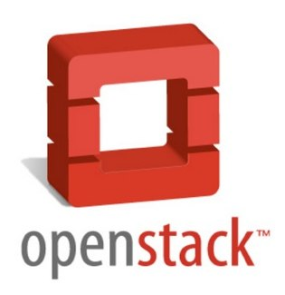
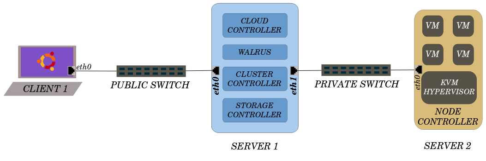
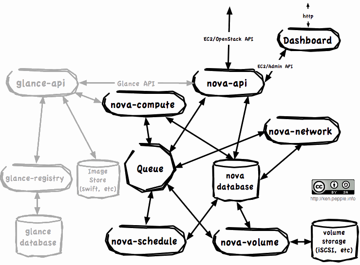

Vipul A. M.
ByClor
Incubator, PICT
Eucalyptus
The Private Cloud,And stuff.
Cloud
Cloud Computing is a computing model, where resources such as computing power, storage, network and software are abstracted and provided as services on the Internet in a remotely accessible fashion. Billing models for these services are generally similar to the ones adopted for public utilities. On-demand availability, ease of provisioning, dynamic and virtually infinite scalability are some of the key attributes of Cloud Computing.
Broad Categories
- Infrastructure As A Services (IAAS)
- Platform As A Service (PAAS)
- Software As A Service (SAAS)
The Cloud Party

Enter Eucalyptus
Eucalyptus is a software available under GPL that helps in creating and managing a private or even a publicly accessible cloud. It provides an EC2 compatible cloud computing platform and S3 compatible cloud storage platform.
Eucalyptus Components
(UEC based)
- Node Controller(NC)
- Cluster Controller(CC)
- Walrus Storage Controller(WS3)
- Storage Controller(SC)
- Cloud Controller(CLC)
Node Controller
A UEC node is a VT enabled server capable of running KVM as the hypervisor.Node Controller runs on each node and controls the life cycle of instances running on the node. The NC interacts with the OS and the hypervisor running on the node on one side and the CC on the other side.
Fuctions:
- Collection of data related to the resource availability and utilization on the Node and reporting the data to CC
- Instance life cycle management
Cluster Controller
CC manages one or more Node Controllers and deploys/manages instances on them. CC also manages the networking for the instances running on the Nodes under certain types of networking modes of Eucalyptus.
- To receive requests from CLC to deploy instances
- To decide which NCs to use for deploying the instances on
- To control the virtual network available to the instances
- To collect information about the NCs registered with it and report it to the CLC
Walrus Storage Controller
WS3 provides a persistent simple storage service using REST and SOAP APIs compatible with S3 APIs.
- Storing the machine images
- Storing snapshots
- Storing and serving files using S3 API
Storage Controller
SC provides persistent block storage for use by the instances.
- Creation of persistent EBS devices
- Providing the block storage over AoE or iSCSI protocol to the instances
- Allowing creation of snapshots of volumes.
Cloud Controller
The Cloud Controller (CLC) is the front end to the entire cloud infrastructure. CLC provides an EC2/S3 compliant web services interface to the client tools on one side and interacts with the rest of the components of the Eucalyptus infrastructure on the other side
- Monitor the availability of resources on various components of the cloud infrastructure
- Resource arbitration – Deciding which clusters will be used for provisioning the instances
- Monitoring the running instances
Architecture Overview

Lets Boot Up!
Caution!
What you are about to do is always unstable
So don't be disheartened after repeated tries
We got it running after banging my head for days
What you'll need
| Hardware | Server | Node | ||
|---|---|---|---|---|
| Minimum | Suggested | Minimum | Suggested | |
| CPU | 1GHz | 2 x 2GHz | VT extensions | VT, 64Bit, Multicore |
| Memory | 1 GiB | 2 GiB | 1 GiB | 4 GiB |
| Disk | 5400rpm IDE | 7200rpm SATA | 5400rpm IDE | 7200rpm SATA or SCSI |
| Disk Space | 40GB | 200GB | 40GB | 100GB |
| Networking | 100Mbps | 1000Mbps | 100Mbps | 1000Mbps |
Step One {Front End}
- Install Ubuntu Server
- Update
sudo apt-get update / sudo apt-get dist-upgrade - Install Packages
sudo apt-get install eucalyptus-cloud eucalyptus-cc
eucalyptus-walrus eucalyptus-sc - Answer Debconf with postfix delivery{Internet}, Cluster Name,Public IP Address Range
Eg: 192.168.1.200-192.168.1.249
Step Two{NC}
- Install Ubuntu Server
- Update
sudo apt-get update / sudo apt-get dist-upgrade - Install Eucalyptus NC
sudo apt-get install eucalyptus-nc - Create Bridge{Code Next Slide}
- Configure eucalyptus.conf with name of bridge{CNS}
Bridging
- interface=eth0
bridge=br0
sudo sed -i "s/^iface $interface inet \(.*\)$/iface $interface inet manual\n\nauto br0\niface $bridge inet \1/" /etc/network/interfaces
sudo tee -a /etc/network/interfaces <<EOF bridge_ports $interface bridge_fd 9 bridge_hello 2 bridge_maxage 12 bridge_stp off EOF
sudo /etc/init.d/networking restart
Bridging
sudo sed -i "s/^VNET_BRIDGE=.*$/VNET_BRIDGE=$bridge/" /etc/eucalyptus/eucalyptus.conf
sudo /etc/init.d/eucalyptus-nc restart
Authorize
- Set Eucalyptus Password
- Exchange keys
sudo -u eucalyptus ssh-copy-id -i ~eucalyptus/.ssh/id_rsa.pub eucalyptus@ - Delete Eucalyptus Password {Optional}
Publish {Services}
sudo start eucalyptus-walrus-publication
sudo start eucalyptus-cc-publication
sudo start eucalyptus-nc-publication
sudo start eucalyptus-sc-publication
Start Listener on Cloud/Cluster
sudo start uec-component-listener
Verify Registration
cat /var/log/eucalyptus/registration.log / 2010-04-08 15:46:36-05:00 | 24243 -> Calling node cluster1 node 10.1.1.75 2010-04-08 15:46:36-05:00 | 24243 -> euca_conf --register-nodes returned 0 2010-04-08 15:48:47-05:00 | 25858 -> Calling walrus Walrus 10.1.1.71 2010-04-08 15:48:51-05:00 | 25858 -> euca_conf --register-walrus returned 0 2010-04-08 15:49:04-05:00 | 26237 -> Calling cluster cluster1 10.1.1.71 2010-04-08 15:49:08-05:00 | 26237 -> euca_conf --register-cluster returned 0 2010-04-08 15:49:17-05:00 | 26644 -> Calling storage cluster1 storage 10.1.1.71 2010-04-08 15:49:18-05:00 | 26644 -> euca_conf --register-sc returned 0
Obtain Credentials
- https://<cloud-controller-ip-address>:8443/
- Download Credentials
- Save them to ~/.euca
- Install euca2ools
- Source eucarc
sudo apt-get install euca2tools Verify Acess
. ~/.euca/eucarc
euca-describe-availability-zones verbose
AVAILABILITYZONE myowncloud 192.168.1.1
AVAILABILITYZONE |- vm types free / max cpu ram disk
AVAILABILITYZONE |- m1.small 0004 / 0004 1 192 2
AVAILABILITYZONE |- c1.medium 0004 / 0004 1 256 5
AVAILABILITYZONE |- m1.large 0002 / 0002 2 512 10
AVAILABILITYZONE |- m1.xlarge 0002 / 0002 2 1024 20
AVAILABILITYZONE |- c1.xlarge 0001 / 0001 4 2048 20
Install Images
If you were able to see some free resources, Go Party!
You're Cloud is up and running.
Browse to the Web-Dashboard and install images from the store
Run it!
- Create Key-Pair
if [ ! -e ~/.euca/mykey.priv ]; then mkdir -p -m 700 ~/.euca touch ~/.euca/mykey.priv chmod 0600 ~/.euca/mykey.priv euca-add-keypair mykey > ~/.euca/mykey.priv fi - Allow Access to port
euca-authorize default -P tcp -p 22 -s 0.0.0.0/0
Create Instance
- Create an instance
euca-run-instances $EMI -k mykey -t m1.small watch -n5 euca-describe-instances- SSH using your key.
- Terminate at will
Open Stack it
UEC Highly unstable!
Let's Cloud Live.
OpenStack
